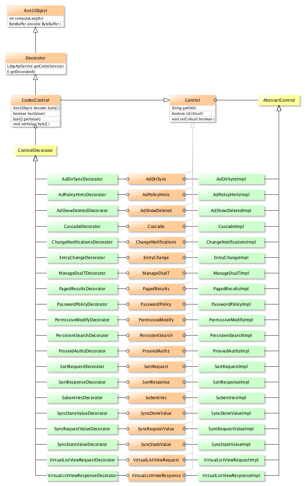

LDAP API
Downloads
Getting Started
Documentation
- Five minute tutorial
- User Guide
- API 1 to 2 migration
- JavaDocs 2
- JavaDocs
- Cross-Reference 2
- Cross-Reference
- Developer Guide
- Internal Guide
Support
Community
About Apache
13 - Controls
Controls are extension to the protocol. They are added in messages, and can contain extra information. A Control contains :
- an OID, unique to this Control, as an identifier
- a Criticality flag, which tells if the control can be ignored or not
- a value, which might be BER encoded
We have 20 Controls declared in the LDAP API, and we can add more.
Implementation
Here is the Control classes and interfaces hierarchy :

As we can see, each Impl class is coupled with a Decorator class, used to process teh encoding and decoding of a Control
Keep in mind that Controls have to be sent within a message, thus be encoded or decoded when the response come back.
Package/module
We have two flavors of Controls, standard and ‘extra’. Standard Controls are those supported by all he servers, extras are oly supported by a few servers. This is an arbitrary decision, we could have put all of them at teh same place.
The list of standard Controls is :
- Cascade
- EntryChange
- ManageDsaIT
- PagedResults
- PersistentSearch
- ProxiedAuthz
- SortRequest
- SortResponse
- Subentries
The list of extra Controls is :
- AdDirSync
- AdPolicyHints
- AdShowDeleted
- ChangeNotifications
- PermissiveModify
- PasswordPolicy
- SyncDoneValue
- SyncRequestValue
- SyncStateValue
- VirtualListViewRequest
- VirtualListViewResponse
The standard Controls are described in the ldap/model module (for the classes and interfaces) and in the ldap/codec/core module (for the Decorator and the decoding classes), in the org.apache.directory.api.ldap.model.message.controls package.
The extra Controls are described in the ldap/extras/codec and _ldap/extras/codec-api modules (the first module contains the classes and interfaces, the second module contains the _Decorator_s and all the decoder classes.) , in the org.apache.directory.api.ldap.extras.controls.XXX packages (one sub-package per control) and in the org.apache.directory.api.ldap.codec.controls.XXX package.
Any new Control is likely to be declared as an extra Control.
Creating a new Control
The Control creation follows a few rules :
- It has to have a unique OID (this is generally the case, for Controls defined in RFCs)
- It has an Interface, a Decorator and an implementation
- It must be declared
Let’s see how it all works, using an example. We will add the Transaction Specification Control, defined in [RFC 5805(https://tools.ietf.org/html/rfc5805)], paragraphe 2.2 :
2.2. Transaction Specification Control
A Transaction Specification Control is an LDAPControl where the
controlType is 1.3.6.1.1.21.2, the criticality is TRUE, and the
controlValue is a transaction identifier. The control is appropriate
for update requests including Add, Delete, Modify, and ModifyDN
(Rename) requests [RFC4511], as well as the Password Modify requests
[RFC3062].
As discussed in Section 4, the Transaction Specification control can
be used in conjunction with request controls appropriate for the
update request.
The Interface will just expose the Transaction Identifier, and store the Control OID :
package org.apache.directory.api.ldap.extras.controls.transaction;
import org.apache.directory.api.ldap.model.message.Control;
/**
* The Transaction Specification control. It's defined in RFC 5805.
* This control is sent with every update once a transaction is started.
* It contains the Transaction ID.
*
* @author <a href="mailto:dev@directory.apache.org">Apache Directory Project</a>
*/
public interface TransactionSpecification
{
/** The Transaction Specification control OID */
String OID = "1.3.6.1.1.21.2";
/**
* @return The transaction identifier
*/
byte[] getIdentifier();
/**
* Set the transaction ID
* @param The transaction identifier, an opaque byte array
*/
void setIdentifier( byte[] identifier );
}
We now need an implementation for this Control. It really just a matter of having an instanciable object. Note that this class exteds the AbstractControl class.
Here it is :
package org.apache.directory.api.ldap.extras.controls.transaction;
import org.apache.directory.api.ldap.model.message.controls.AbstractControl;
import org.apache.directory.api.util.Strings;
/**
* The Transaction Specification control. It's defined in RFC 5805.
* This control is sent with every update once a transaction is started.
* It contains the Transaction ID.
*
* @author <a href="mailto:dev@directory.apache.org">Apache Directory Project</a>
*/
public class TransactionSpecificationImpl extends AbstractControl implements TransactionSpecification
{
/** The Transaction Specification identifier */
private byte[] identifier;
/**
* Default constructor
*/
public TransactionSpecificationImpl()
{
super( OID );
}
/**
* {@inheritDoc}
*/
@Override
public byte[] getIdentifier()
{
return identifier;
}
/**
* {@inheritDoc}
*/
@Override
public void setIdentifier( byte[] identifier )
{
// Copy the byte[]
if ( identifier != null )
{
this.identifier = new byte[identifier.length];
System.arraycopy( identifier, 0, this.identifier, 0, identifier.length );
}
}
/**
* @see Object#toString()
*/
@Override
public String toString()
{
if ( identifier != null )
{
return "Transaction specification ID=null";
}
else
{
return "Transaction specification ID=" + Strings.dumpBytes( identifier );
}
}
}
Nothing much to say, except that we have a default constructor that use the Control‘s OID and a toString() method, for convenience. The Identifier is printed in hex format.
That’s it for the two base class and interface, we now have to deal with encoding and decoding.
Encoding & Decoding
Encoding the Control is done by the Decorator. This class implements the Asn1Object which defines the method encode(). Let’s see how it works…
In order to encode the value we need to know its length, this is why we also have to implement the computeLegth() method. In our case, it’s superflouous, as the length is known : it’s the identifier‘s length. Decoidng is quitre trivial : as we only need to decode the Control value, and as it’s an opaque byte[], we just need to copy this value in the instance.
In any case, we don’t encode the whole Control, we just encode it’s value : the Control itself is encode by the LdapMessage.
Here is the Decorator code.
package org.apache.directory.api.ldap.extras.controls.transaction;
import java.nio.ByteBuffer;
import org.apache.directory.api.asn1.Asn1Object;
import org.apache.directory.api.asn1.DecoderException;
import org.apache.directory.api.asn1.EncoderException;
import org.apache.directory.api.ldap.codec.api.ControlDecorator;
import org.apache.directory.api.ldap.codec.api.LdapApiService;
/**
* TransactionSpecification decorator.
*
* @author <a href="mailto:dev@directory.apache.org">Apache Directory Project</a>
*/
public class TransactionSpecificationDecorator extends ControlDecorator<TransactionSpecification> implements TransactionSpecification
{
/**
* Create a new instance of TransactionSpecificationDecorator
*
* @param codec The LDAP Service to use
* @param decoratedControl The control to decorate
*/
public TransactionSpecificationDecorator( LdapApiService codec, TransactionSpecification decoratedControl )
{
super( codec, decoratedControl );
}
/**
* {@inheritDoc}
*/
@Override
public Asn1Object decode( byte[] controlBytes ) throws DecoderException
{
// Nothing to decode, the byte array is copied as is in identifier
setIdentifier( controlBytes );
return this;
}
/**
* {@inheritDoc}
*/
@Override
public int computeLength()
{
byte[] identifier = getDecorated().getIdentifier();
if ( identifier != null )
{
return identifier.length;
}
else
{
return -1;
}
}
/**
* {@inheritDoc}
*/
@Override
public ByteBuffer encode( ByteBuffer buffer ) throws EncoderException
{
byte[] identifier = getDecorated().getIdentifier();
if ( identifier != null )
{
ByteBuffer encoded = ByteBuffer.allocate( identifier.length );
encoded.put( identifier );
return encoded;
}
else
{
return ByteBuffer.allocate( 0 );
}
}
/**
* {@inheritDoc}
*/
@Override
public byte[] getIdentifier()
{
return getDecorated().getIdentifier();
}
/**
* {@inheritDoc}
*/
@Override
public void setIdentifier( byte[] identifier )
{
getDecorated().setIdentifier( identifier );
}
}
The Factory
We also need a Factory class that is used to register the Control. This class simply expose a constructor for the Control. It’s code is pretty trival, there is nothing specific to the added Control.
Side note : as this class is ony invoked at startup, we could use reflection instead of having one Factory per Control…
package org.apache.directory.api.ldap.extras.controls.transaction;
import org.apache.directory.api.ldap.codec.api.CodecControl;
import org.apache.directory.api.ldap.codec.api.ControlFactory;
import org.apache.directory.api.ldap.codec.api.LdapApiService;
/**
* A codec {@link ControlFactory} implementation for {@link TransactionSpecification} controls.
*
* @author <a href="mailto:dev@directory.apache.org">Apache Directory Project</a>
*/
public class TransactionSpecificationFactory implements ControlFactory<TransactionSpecification>
{
/** The LDAP codec responsible for encoding and decoding Cascade Controls */
private LdapApiService codec;
/**
* Creates a new instance of TransactionSpecificationFactory.
*
* @param codec The LDAP codec
*/
public TransactionSpecificationFactory( LdapApiService codec )
{
this.codec = codec;
}
/**
* {@inheritDoc}
*/
@Override
public String getOid()
{
return TransactionSpecification.OID;
}
/**
* {@inheritDoc}
*/
@Override
public CodecControl<TransactionSpecification> newCodecControl()
{
return new TransactionSpecificationDecorator( codec, new TransactionSpecificationImpl() );
}
/**
* {@inheritDoc}
*/
@Override
public CodecControl<TransactionSpecification> newCodecControl( TransactionSpecification control )
{
return new TransactionSpecificationDecorator( codec, control );
}
}
A more complex Control
We just shown a Control which was easy to encode or decode. Most of the time, the Control‘s value is itself an ASN/1 BER encoded value, and we need more classes to be able to process the decoding. Let use another Control as a sample :
TODO
Adding a Control to the API
Once we have written the Control classes and interfaces, we need to declare it so that the LDAP API can use it.
The thing is that the LDAP API is OSGi compliant, so we need to expose the Controls and we also have to activate them.
The ExtrasBundleActivator class (in the ldap/extras/codec module) has to be modified to register and unregister the added Control :
...
import org.apache.directory.api.ldap.extras.controls.changeNotifications.TransactionSpecification;
...
/**
* A BundleActivator for the ldap codec extras extension: extra ApacheDS and
* Apache Directory Studio specific controls and extended operations.
*
* @author <a href="mailto:dev@directory.apache.org">Apache Directory Project</a>
*/
public class ExtrasBundleActivator implements BundleActivator
{
....
/**
* Registers all the extras controls present in this control pack.
*
* @param codec The codec service.
*/
private void registerExtrasControls( LdapApiService codec )
{
ControlFactory<AdDirSync> adDirSyncFactory = new AdDirSyncFactory( codec );
codec.registerControl( adDirSyncFactory );
...
ControlFactory<TransactionSpecification> TransactionSpecificationFactory = new TransactionSpecificationFactory( codec );
codec.registerControl( TransactionSpecification );
}
...
private void unregisterExtrasControls( LdapApiService codec )
{
codec.unregisterControl( AdDirSync.OID );
codec.unregisterControl( AdShowDeleted.OID );
...
codec.unregisterControl( TransactionSpecification.OID );
}
....
Here we added the TransactionSpecification Control at the end of thse two methods, and added the associated import.
Last, not least, we need to update the loadStockControls method in the CodecFactoryUtil class (in ldap/codec/standalone module) :
...
import org.apache.directory.api.ldap.extras.controls.changeNotifications.TransactionSpecification;
...
/**
* A utility class for adding Codec and extended operation factories.
*
* @author <a href="mailto:dev@directory.apache.org">Apache Directory Project</a>
*/
public final class CodecFactoryUtil
{
....
/**
* Loads the Controls implement out of the box in the codec.
*
* @param controlFactories The Control factories to use
* @param apiService The LDAP Service instance to use
*/
public static void loadStockControls( Map<String, ControlFactory<?>> controlFactories, LdapApiService apiService )
{
// Standard controls
ControlFactory<Cascade> cascadeFactory = new CascadeFactory( apiService );
controlFactories.put( cascadeFactory.getOid(), cascadeFactory );
LOG.info( "Registered pre-bundled control factory: {}", cascadeFactory.getOid() );
...
ControlFactory<TransactionSpecification> transactionSpecificationFactory =
new TransactionSpecificationFactory( apiService );
controlFactories.put( transactionSpecificationFactory.getOid(), transactionSpecificationFactory );
LOG.info( "Registered pre-bundled control factory: {}", transactionSpecificationFactory.getOid() );
}
...
}
We are done ! Note that there is nothing to change in the MANIFEST.MF file, as the packages are already exported.